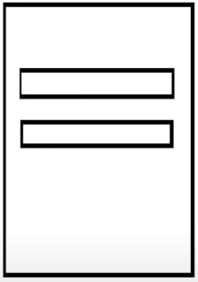
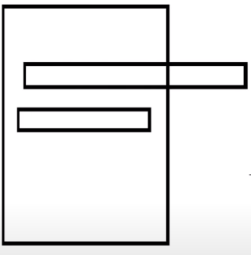

Exiten dos tipos de unidades, unidades relativas y unidades absolutas
Son unidades que permiten que los elementos se adapten al tamaño de la ventana, es decir, que los elementos se vean bien en una pc, o una tablet o un celular, basicamente seran responsive
1 em -> 16px por defecto
Ahora bien, si por ejemplo tenemos un un div y dentro de este tenemos un p, y al div le colocamos un font-size de 25px o de 1px, pues ahora todos los elementos que esten dentro del div si les asignamos propiedades de font-size con em, el valor del em tomara el valor en px que asignamos en el div. (aplica para cualquier propiedad en la que se pueda asignar tamaños)
Ejemplo de em (ver el CSS)
Esta unidad de medida relativa traduce,viewport width, es una unidad que se basa en el tamaño de la pantalla, es decir que si a un elemento le doy 100vw va a tomar el 100 del ancho de la pantalla
Esta unidad de medida relativa traduce,viewport height, es una unidad que se basa en el tamaño de la pantalla, es decir que si a un elemento le doy 100vh va a tomar el 100 del alto de la pantalla
Ejemplo de vw(viewport width) - vh(viewport height) (ver el CSS)
Son unidades que permiten que los elemetos NO se adapten al tamaño de la venta, es decir, no sera responsive
